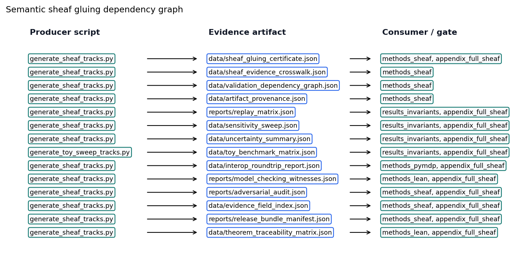

Each manifest row in manuscript/sheaf/manifest.yaml
binds fragment tracks from manuscript/sheaf/tracks.yaml. A
track supplies a renderer, compose order, label, and optional flag; the
composer flattens the binding set into one Markdown section for PDF and
web output.
The operational claim is auditable binding: analytical, simulation, pymdp, visualization, Lean, GNN, ontology, and optional media fragments attach to each IMRAD row under [eq:coverage_cell] (P present, — unbound, M missing).
[fig:sheaf_layers_overview] summarizes 32 fragment types and their IMRAD bindings. Generated tables below list every track definition and section×track binding at compose time.
uv run python scripts/compose_manuscript.py
uv run python scripts/compose_manuscript.py --validate-only --strictEach run emits output/data/sheaf_coverage_matrix.json
and regenerates coverage artifacts. Partial compose
(--section) is draft-only; the matrix always reflects the
full manifest. Coverage totals appear on [sec:sheaf_coverage];
discussion scope is in [sec:discussion_outlook].
--validate-only --strict runs the structural gate before
any fragment is glued. Beyond per-cell coverage, it invokes the
sheaf-law oracle (verify_sheaf_laws,
src/manuscript/sheaf/laws.py), which checks 6 axioms —
poset, presheaf functoriality, separation, gluing, typing, and
compositionality — and reports 6/6 satisfied for the current manifest. A
violation is raised as an error-level issue and aborts the build, so a
malformed manifest (a section colliding on an output file, an off-chain
block, a mistyped fragment, a fragment shared between sections) can
never compose. The formal statements are in the formalism block below;
the negative-control suite (tests/test_sheaf_laws.py)
proves each check is falsifiable.
The semantic layer is separate from those structural laws.
output/data/sheaf_gluing_certificate.json records
cross-track symbols, typed claim evidence, artifact sources, and
manuscript-variable restrictions; validation fails when the analytical,
pymdp, GNN, ontology, Lean, visualization, or manuscript tracks disagree
about a shared symbol or measured claim. [fig:semantic_gluing_graph]
renders this gluing graph: the configured producers, the generated
evidence artifacts, and the validation consumers that read each shared
symbol.
The manuscript is modelled as a coverage sheaf over a finite base poset. Let the base \(P\) be the IMRAD blocks ordered as a chain,
\[ \mathsf{Introduction} \prec \mathsf{Methods} \prec \mathsf{Results} \prec \mathsf{Discussion} \prec \mathsf{Appendix}, \] {#eq:imrad_chain}
with, in each block, a group node above its section
nodes (written \(G \sqsupseteq s\)).
\(P\) is therefore a finite poset
(equivalently a finite Alexandrov space). Let \(\mathcal{T}\) be the registered
fragment-track set from manuscript/sheaf/tracks.yaml; each
track \(t \in \mathcal{T}\) carries a
renderer \(R(t)\), label \(L(t)\), optional flag \(O(t)\), and a strict compose-order index
\(\pi(t)\).
The presheaf \(\mathcal{F}\) is a contravariant functor on \(P\) — \(\mathcal{F}\colon P \to \mathbf{Set}\) with restriction maps along \(\sqsupseteq\) — assigning to each composing section \(s\) its bound fragment set \(\mathcal{F}(s) = \{\,(t, F_s(t)) : t \text{ bound in } s\,\}\), where \(F_s : \mathcal{T} \rightharpoonup \mathbf{Path}\) is the section’s partial binding map. Restriction along \(G \sqsupseteq s\) is projection onto a section’s own bindings; group nodes carry the empty assignment and do not compose.
The coverage cell is
\[ B(s,t) \in \{\mathrm{P}, \mathrm{—}, \mathrm{M}\} \] {#eq:coverage_cell}
derived from \(F_s(t)\) and filesystem existence at compose time: P when a bound fragment exists, — when the track is unbound for that row, and M when a bound path is missing. The current regenerated matrix reports 90 present / 90 bound / 0 missing cells. Registry size: \(|\mathcal{T}| = 32\) types across 17 IMRAD manifest rows (5 group rows, 12 composing sections).
What makes this presheaf a sheaf — rather than a bare
incidence table — is that the composer’s structural axioms are
machine-checked. The oracle verify_sheaf_laws
(src/manuscript/sheaf/laws.py) verifies 6 laws, and the
regenerated build reports 6/6 satisfied:
track_order
override must be a permutation of the section’s bound tracks).section_figures,
layers_report) synthesize their body and are explicitly
type-exempt.Each law is paired with a negative control in
tests/test_sheaf_laws.py — a single mutation that breaks
the law and is proven to be caught — so the gate binds the laws’
content, not merely their shape. Under --strict,
any violation is surfaced as an error-level manifest issue and aborts
composition.
These laws verify the sheaf axioms on a finite base poset. They do not compute sheaf cohomology (\(H^0\)/\(H^1\), Čech complexes, derived functors); “sheaf” here names the verified separation-and-gluing structure of a multi-track coverage assignment, not a cohomological invariant. Formal track definitions and section×track bindings appear in the generated tables below.
Semantic gluing then checks agreement of the glued content: coverage counts, manuscript variables, typed claim predicates, pymdp mode/hash, Bernoulli GNN ontology, and SI T-maze GNN ontology. This certificate is a content-level audit over the same base, not an additional topological law.

The provenance fragment makes artifact lineage a live
canonical sheaf track. The configured producer
generate_sheaf_tracks.py writes
output/data/artifact_provenance.json, which hashes 70
required toy artifacts and records producer scripts, source commit,
deterministic seed fields, config digests, and 5 artifact bundles.
Publication claims that depend on generated files must be traceable to
this lineage table or to a narrower artifact-specific certificate.
The provenance claim is intentionally limited: every listed artifact
exists, has a SHA-256 digest or an explicit cycle exclusion, is produced
by a configured analysis script, and carries seed/config provenance
(70 seeded rows; all seeded flag true;
bundle-complete flag true). A changed file, missing
producer, or stale saved digest is a validation failure, not a prose
warning.
The counterexample fragment records expected-failure
fixtures as first-class evidence.
output/reports/counterexample_matrix.json lists 22 negative
controls that intentionally mutate ontology mappings, semantic
certificates, graph-world trace agreement, typed claim evidence, replay
rows, release parity, and provenance hashes.
The matrix is not an empirical result. It is a falsifiability ledger: each row names the gate that must fail and the test that proves the failure path remains live.
The adversarial_audit fragment makes expected failures
part of the sheaf rather than an informal test note.
output/reports/adversarial_audit.json records 22 known-bad
rows and 0 known-bad rows passing; publication proceeds only when every
row is documented as an expected failure and mapped to a gate.
The audit rows target the same failure modes as the semantic
certificate: incomplete sweep cells, unnormalized uncertainty rows,
interop field loss, stale certificate state, and empirical-scope
leakage. The scope boundary remains toy-only:
toy_only_pass.
The evidence_fields fragment indexes the exact artifact
fields that support typed claims and hydrated manuscript tokens.
output/data/evidence_field_index.json records 81 field
rows, and the track passes only when every referenced JSONPath or dotted
field is present (true).
The release_bundle fragment records whether the
canonical deliverables exist before copying and whether copied root
outputs match or are explicitly deferred until the copy stage.
output/reports/release_bundle_manifest.json tracks 23
required deliverables with source-present flag true.
The gate_ergonomics fragment turns validation commands
into evidence rows. output/data/validation_gate_index.json
records 22 gate rows, each naming required inputs and the
negative-control surface that should fail closed.
The artifact_diffoscope track compares saved provenance
hashes against live artifact hashes at the artifact root JSONPath. Its
proof artifact is output/reports/artifact_diffoscope.json:
it currently records 37 comparison rows, with equality status
true.
The artifact_license track classifies generated and
project-source artifacts under the public project license boundary. Its
audit artifact is
output/reports/artifact_license_audit.json: it currently
records 70 rows, with license-safe status true.
The manuscript_staleness fragment closes the hydration
loop. output/reports/manuscript_staleness_report.json
checks 212 manuscript token bindings against the current generated
variables after resolved markdown is written; the pass flag is
true.
This is a publication-systems claim, not a domain result. A stale hydrated value, unresolved token, or missing resolved section becomes a validation failure before PDF or web outputs are accepted.
Compose order and renderer bindings from
manuscript/sheaf/tracks.yaml.
| Order | Track id | Label | Renderer | Optional |
|---|---|---|---|---|
| 10 | prose |
Narrative prose | markdown |
No |
| 20 | formalism |
Mathematical formalism | markdown |
No |
| 30 | simulation |
Analytical simulation notes | markdown |
No |
| 32 | assumption_index |
Analytical assumption index | markdown |
No |
| 35 | layers |
Sheaf layers tables | layers_report |
Yes |
| 40 | pymdp |
pymdp harness artifacts | markdown |
No |
| 41 | interop |
GNN/ontology/JSON interop checks | markdown |
No |
| 42 | provenance |
Artifact provenance and bundle lineage spine | markdown |
No |
| 45 | replay_matrix |
Deterministic replay matrix | markdown |
No |
| 48 | counterexample |
Expected-failure counterexamples | markdown |
No |
| 50 | adversarial_audit |
Adversarial audit matrix | markdown |
No |
| 52 | evidence_fields |
Evidence field index | markdown |
No |
| 53 | release_bundle |
Release bundle parity manifest | markdown |
No |
| 54 | gate_ergonomics |
Validation gate ergonomics | markdown |
No |
| 55 | artifact_diffoscope |
Artifact diffoscope | markdown |
No |
| 56 | artifact_license |
Artifact license audit | markdown |
No |
| 60 | sensitivity |
Toy sensitivity sweep | markdown |
No |
| 62 | uncertainty |
Toy uncertainty summaries | markdown |
No |
| 65 | benchmark |
Compact toy benchmark matrix | markdown |
No |
| 66 | manuscript_staleness |
Hydrated manuscript staleness report | markdown |
No |
| 67 | visualization |
Figure references | section_figures |
No |
| 70 | lean |
Lean boundary fragment | markdown |
No |
| 75 | model_checking |
Finite-state model checking witnesses | markdown |
No |
| 76 | theorem_traceability |
Lean theorem traceability matrix | markdown |
No |
| 77 | proof_extraction |
Lean proof extraction index | markdown |
No |
| 78 | state_space_catalog |
Finite state-space catalog | markdown |
No |
| 79 | causal_ablation |
Deterministic causal ablation matrix | markdown |
No |
| 80 | gnn |
GNN notation fragment | markdown |
No |
| 90 | ontology |
Active Inference Ontology bindings | ontology_yaml |
No |
| 100 | animation |
Animation fragment | markdown |
Yes |
| 102 | animation_delta |
Animation frame-delta manifest | markdown |
No |
| 110 | release_notes |
Release notes evidence | markdown |
No |
Track count: 32 registered fragment types.
Section rows versus fragment track columns. P = present (bound and file exists); — = absent (not bound); M = missing (bound, file absent).
| Section | prose | formalism | simulation | assumption_index | layers | pymdp | interop | provenance | replay_matrix | counterexample | adversarial_audit | evidence_fields | release_bundle | gate_ergonomics | artifact_diffoscope | artifact_license | sensitivity | uncertainty | benchmark | manuscript_staleness | visualization | lean | model_checking | theorem_traceability | proof_extraction | state_space_catalog | causal_ablation | gnn | ontology | animation | animation_delta | release_notes |
|---|---|---|---|---|---|---|---|---|---|---|---|---|---|---|---|---|---|---|---|---|---|---|---|---|---|---|---|---|---|---|---|---|
| Introduction (group) | — | — | — | — | — | — | — | — | — | — | — | — | — | — | — | — | — | — | — | — | — | — | — | — | — | — | — | — | — | — | — | — |
| Motivation and scope | P | — | — | — | — | — | — | — | — | — | — | — | — | — | — | — | — | — | — | — | — | — | — | — | — | — | — | — | — | — | — | — |
| Contributions | P | — | — | — | — | — | — | — | — | — | — | — | — | — | — | — | — | — | — | — | P | — | — | — | — | — | — | — | P | — | — | — |
| Methods (group) | — | — | — | — | — | — | — | — | — | — | — | — | — | — | — | — | — | — | — | — | — | — | — | — | — | — | — | — | — | — | — | — |
| Bernoulli–Ising analytical model | P | P | P | P | — | — | — | — | — | — | — | — | — | — | — | — | — | — | — | — | P | — | — | — | — | — | — | P | P | — | — | — |
| pymdp simulation harness | P | P | — | — | — | P | P | — | — | — | — | — | — | — | — | — | — | — | — | — | P | — | — | — | — | — | — | P | P | — | — | — |
| Lean formalization boundary | P | — | — | — | — | — | — | — | — | — | — | — | — | — | — | — | — | — | — | — | P | P | P | P | P | — | — | — | — | — | — | — |
| Sheaf composition | P | P | — | — | P | — | — | P | — | P | P | P | P | P | P | P | — | — | — | P | P | — | — | — | — | — | — | — | — | — | — | — |
| Results (group) | — | — | — | — | — | — | — | — | — | — | — | — | — | — | — | — | — | — | — | — | — | — | — | — | — | — | — | — | — | — | — | — |
| Mutual-information parameter sweep | P | P | P | — | — | — | — | — | — | — | — | — | — | — | — | — | — | — | — | — | P | — | — | — | — | — | — | — | — | — | — | — |
| Free-energy decomposition | P | — | — | — | — | — | — | — | — | — | — | — | — | — | — | — | — | — | — | — | P | — | — | — | — | — | — | — | — | — | — | — |
| T-maze active-inference rollout | P | — | — | — | — | P | — | — | — | — | — | — | — | — | — | — | — | — | — | — | P | — | — | — | — | — | — | — | — | — | — | — |
| Validation invariants | P | — | P | — | — | — | — | — | P | — | — | — | — | — | — | — | P | P | P | — | P | — | — | — | — | P | P | — | — | — | — | — |
| Discussion (group) | — | — | — | — | — | — | — | — | — | — | — | — | — | — | — | — | — | — | — | — | — | — | — | — | — | — | — | — | — | — | — | — |
| Limitations and outlook | P | — | P | — | — | — | — | — | — | — | — | — | — | — | — | — | — | — | — | — | — | — | — | — | — | — | — | — | P | — | — | P |
| Appendix (group) | — | — | — | — | — | — | — | — | — | — | — | — | — | — | — | — | — | — | — | — | — | — | — | — | — | — | — | — | — | — | — | — |
| Appendix: full track coverage | P | P | P | P | — | P | P | P | P | P | P | P | P | P | P | P | P | P | P | P | P | P | P | P | P | P | P | P | P | P | P | P |
Totals: 90 present / 90 bound / 0 missing.
| Symbol | Coverage color | Meaning |
|---|---|---|
| P | Black | Track present (bound and fragment exists) |
| — | White | Absent (not bound for this section) |
| M | Gray | Missing (bound but fragment file absent) |
Generated status for the current manuscript sheaf, summarized per composable section.
| Section | IMRAD | Bound | Present | Missing | Status |
|---|---|---|---|---|---|
| Motivation and scope | introduction | 1 | 1 | 0 | fully_sheafed |
| Contributions | introduction | 3 | 3 | 0 | fully_sheafed |
| Bernoulli–Ising analytical model | methods | 7 | 7 | 0 | fully_sheafed |
| pymdp simulation harness | methods | 7 | 7 | 0 | fully_sheafed |
| Lean formalization boundary | methods | 6 | 6 | 0 | fully_sheafed |
| Sheaf composition | methods | 13 | 13 | 0 | fully_sheafed |
| Mutual-information parameter sweep | results | 4 | 4 | 0 | fully_sheafed |
| Free-energy decomposition | results | 2 | 2 | 0 | fully_sheafed |
| T-maze active-inference rollout | results | 3 | 3 | 0 | fully_sheafed |
| Validation invariants | results | 9 | 9 | 0 | fully_sheafed |
| Limitations and outlook | discussion | 4 | 4 | 0 | fully_sheafed |
| Appendix: full track coverage | appendix | 31 | 31 | 0 | fully_sheafed |
Section status: 12 / 12 composable sections fully sheafed; 0 required bound fragments missing.
| Track | Renderer | Bound sections | Present | Missing | Claims | Status |
|---|---|---|---|---|---|---|
prose |
markdown |
12 | 12 | 0 | 0 | complete |
formalism |
markdown |
5 | 5 | 0 | 0 | complete |
simulation |
markdown |
5 | 5 | 0 | 9 | complete |
assumption_index |
markdown |
2 | 2 | 0 | 1 | complete |
layers |
layers_report |
1 | 1 | 0 | 1 | complete |
pymdp |
markdown |
3 | 3 | 0 | 15 | complete |
interop |
markdown |
2 | 2 | 0 | 3 | complete |
provenance |
markdown |
2 | 2 | 0 | 12 | complete |
replay_matrix |
markdown |
2 | 2 | 0 | 3 | complete |
counterexample |
markdown |
2 | 2 | 0 | 2 | complete |
adversarial_audit |
markdown |
2 | 2 | 0 | 9 | complete |
evidence_fields |
markdown |
2 | 2 | 0 | 1 | complete |
release_bundle |
markdown |
2 | 2 | 0 | 4 | complete |
gate_ergonomics |
markdown |
2 | 2 | 0 | 4 | complete |
artifact_diffoscope |
markdown |
2 | 2 | 0 | 1 | complete |
artifact_license |
markdown |
2 | 2 | 0 | 1 | complete |
sensitivity |
markdown |
2 | 2 | 0 | 7 | complete |
uncertainty |
markdown |
2 | 2 | 0 | 3 | complete |
benchmark |
markdown |
2 | 2 | 0 | 3 | complete |
manuscript_staleness |
markdown |
2 | 2 | 0 | 1 | complete |
visualization |
section_figures |
10 | 10 | 0 | 10 | complete |
lean |
markdown |
2 | 2 | 0 | 7 | complete |
model_checking |
markdown |
2 | 2 | 0 | 6 | complete |
theorem_traceability |
markdown |
2 | 2 | 0 | 2 | complete |
proof_extraction |
markdown |
2 | 2 | 0 | 1 | complete |
state_space_catalog |
markdown |
2 | 2 | 0 | 1 | complete |
causal_ablation |
markdown |
2 | 2 | 0 | 1 | complete |
gnn |
markdown |
3 | 3 | 0 | 4 | complete |
ontology |
ontology_yaml |
5 | 5 | 0 | 5 | complete |
animation |
markdown |
1 | 1 | 0 | 2 | complete |
animation_delta |
markdown |
1 | 1 | 0 | 1 | complete |
release_notes |
markdown |
2 | 2 | 0 | 1 | complete |
Status cells: 544 section-track cells.
| Event | Component | Output | Status | Detail |
|---|---|---|---|---|
registry_loaded |
sheaf.registry |
registered_tracks |
ok |
32 tracks |
manifest_loaded |
sheaf.manifest |
manifest_sections |
ok |
17 sections |
coverage_matrix_built |
sheaf.coverage |
output/data/sheaf_coverage_matrix.json |
ok |
90 present cells |
section_status_matrix_built |
sheaf.status |
output/data/sheaf_section_status_matrix.json |
ok |
544 section-track cells |
layers_renderer_bound |
sheaf.layers_report |
manuscript/08_methods_sheaf.md |
ok |
methods sheaf layer tables |
semantic_artifacts_indexed |
sheaf.semantic |
output/data/validation_dependency_graph.json |
ok |
70 artifact producer rows |
validation_gates_indexed |
gates |
output/data/validation_gate_index.json |
ok |
3 gate groups |
manuscript_sections_composed |
sheaf.compose |
manuscript/*.md |
ok |
16 composed markdown files |
Render events: 8.
| Claim | Artifact | Producer | Gates |
|---|---|---|---|
sheaf_registry |
manuscript/sheaf/tracks.yaml |
manual |
validate_outputs |
sheaf_manifest |
manuscript/sheaf/manifest.yaml |
manual |
validate_outputs |
sheaf_coverage_config |
manuscript/sheaf/coverage.yaml |
manual |
validate_outputs |
sheaf_coverage_matrix |
output/data/sheaf_coverage_matrix.json |
generate_figures.py |
validate_outputs, validate_manuscript |
sheaf_gluing_certificate |
output/data/sheaf_gluing_certificate.json |
generate_sheaf_tracks.py |
validate_manuscript, validate_outputs |
sheaf_evidence_crosswalk |
output/data/sheaf_evidence_crosswalk.json |
generate_sheaf_tracks.py |
validate_manuscript, validate_outputs |
evidence_fields_mapped |
output/data/evidence_field_index.json |
generate_sheaf_tracks.py |
validate_outputs, validate_manuscript |
validation_dependency_graph |
output/data/validation_dependency_graph.json |
generate_sheaf_tracks.py |
validate_manuscript, validate_outputs |
Claim rows: 81 typed evidence claims.
| Artifact | Producer | Configured | Consumers |
|---|---|---|---|
output/data/analysis_statistics.json |
compute_statistics.py |
Yes | results_si_tmaze, results_invariants |
output/data/analytical_assumption_index.json |
generate_toy_sweep_tracks.py |
Yes | methods_analytical, appendix_full_sheaf |
output/data/analytical_observable_sweep.json |
generate_toy_sweep_tracks.py |
Yes | results_invariants, appendix_full_sheaf |
output/data/animation_frame_deltas.json |
render_animation.py |
Yes | appendix_full_sheaf |
output/data/artifact_provenance.json |
generate_sheaf_tracks.py |
Yes | methods_sheaf |
output/data/causal_ablation_matrix.json |
generate_toy_sweep_tracks.py |
Yes | results_invariants, appendix_full_sheaf |
output/data/cross_track_symbol_table.json |
generate_integration_audit.py |
Yes | methods_sheaf, appendix_full_sheaf |
output/data/evidence_field_index.json |
generate_sheaf_tracks.py |
Yes | methods_sheaf, appendix_full_sheaf |
output/data/figure_source_map.json |
generate_integration_audit.py |
Yes | methods_sheaf, appendix_full_sheaf |
output/data/gnn_roundtrip_report.json |
generate_formal_interop_tracks.py |
Yes | methods_pymdp, appendix_full_sheaf |
output/data/interop_roundtrip_report.json |
generate_sheaf_tracks.py |
Yes | methods_pymdp, appendix_full_sheaf |
output/data/manuscript_evidence_tables.json |
generate_integration_audit.py |
Yes | methods_sheaf, appendix_full_sheaf |
output/data/manuscript_token_provenance.json |
generate_integration_audit.py |
Yes | methods_sheaf, appendix_full_sheaf |
output/data/manuscript_variables.json |
z_generate_manuscript_variables.py |
Yes | methods_sheaf, appendix_full_sheaf |
output/data/ontology_alias_index.json |
generate_formal_interop_tracks.py |
Yes | methods_pymdp, appendix_full_sheaf |
output/data/ontology_profile_matrix.json |
generate_formal_interop_tracks.py |
Yes | methods_pymdp, appendix_full_sheaf |
output/data/parameter_sweep.csv |
run_analytical_sweep.py |
Yes | methods_analytical, results_mi_sweep |
output/data/proof_extraction_index.json |
generate_formal_interop_tracks.py |
Yes | methods_lean, appendix_full_sheaf |
output/data/pymdp_policy_posterior_grid.json |
simulate_si_tmaze.py |
Yes | methods_pymdp, appendix_full_sheaf |
output/data/sensitivity_sweep.json |
generate_sheaf_tracks.py |
Yes | results_invariants, appendix_full_sheaf |
output/data/sheaf_coverage_matrix.json |
generate_figures.py |
Yes | methods_sheaf, appendix_full_sheaf |
output/data/sheaf_evidence_crosswalk.json |
generate_sheaf_tracks.py |
Yes | methods_sheaf |
output/data/sheaf_gluing_certificate.json |
generate_sheaf_tracks.py |
Yes | methods_sheaf, appendix_full_sheaf |
output/data/sheaf_section_status_matrix.json |
generate_sheaf_tracks.py |
Yes | methods_sheaf, appendix_full_sheaf |
output/data/si_efe_terms.json |
generate_toy_sweep_tracks.py |
Yes | results_invariants, appendix_full_sheaf |
output/data/si_graph_world_summary.json |
simulate_si_graph_world.py |
Yes | methods_pymdp, results_si_tmaze |
output/data/si_graph_world_topology_sweep.json |
generate_toy_sweep_tracks.py |
Yes | results_invariants, appendix_full_sheaf |
output/data/si_graph_world_topology_traces.json |
generate_toy_sweep_tracks.py |
Yes | results_invariants, appendix_full_sheaf |
output/data/si_graph_world_trace.json |
simulate_si_graph_world.py |
Yes | methods_pymdp, results_si_tmaze, appendix_full_sheaf |
output/data/si_policy_comparison.json |
simulate_si_tmaze.py |
Yes | methods_pymdp, results_si_tmaze |
output/data/si_policy_grid.json |
generate_toy_sweep_tracks.py |
Yes | results_invariants, appendix_full_sheaf |
output/data/si_tmaze_summary.json |
simulate_si_tmaze.py |
Yes | methods_pymdp, results_si_tmaze |
output/data/si_tmaze_trace.json |
simulate_si_tmaze.py |
Yes | methods_pymdp, results_si_tmaze |
output/data/state_space_catalog.json |
generate_toy_sweep_tracks.py |
Yes | results_invariants, appendix_full_sheaf |
output/data/theorem_traceability_matrix.json |
generate_sheaf_tracks.py |
Yes | methods_lean, appendix_full_sheaf |
output/data/toy_benchmark_matrix.json |
generate_toy_sweep_tracks.py |
Yes | results_invariants, appendix_full_sheaf |
output/data/track_improvement_scope.json |
generate_sheaf_tracks.py |
Yes | methods_sheaf, appendix_full_sheaf |
output/data/uncertainty_summary.json |
generate_sheaf_tracks.py |
Yes | results_invariants, appendix_full_sheaf |
output/data/validation_dependency_graph.json |
generate_sheaf_tracks.py |
Yes | methods_sheaf |
output/data/validation_gate_index.json |
generate_integration_audit.py |
Yes | methods_sheaf, appendix_full_sheaf |
../figures/si_belief_trajectory.gif |
render_animation.py |
Yes | appendix_full_sheaf |
output/reports/adversarial_audit.json |
generate_sheaf_tracks.py |
Yes | methods_sheaf, appendix_full_sheaf |
output/reports/artifact_diffoscope.json |
generate_integration_audit.py |
Yes | methods_sheaf, appendix_full_sheaf |
output/reports/artifact_license_audit.json |
generate_integration_audit.py |
Yes | methods_sheaf, appendix_full_sheaf |
output/reports/blocked_scope_manifest.json |
generate_sheaf_tracks.py |
Yes | methods_sheaf, discussion_outlook, appendix_full_sheaf |
output/reports/claim_evidence_audit.json |
generate_integration_audit.py |
Yes | methods_sheaf, appendix_full_sheaf |
output/reports/counterexample_matrix.json |
generate_sheaf_tracks.py |
Yes | methods_sheaf |
output/reports/figure_hash_manifest.json |
generate_integration_audit.py |
Yes | methods_sheaf, appendix_full_sheaf |
output/reports/gnn_lint_report.json |
generate_formal_interop_tracks.py |
Yes | methods_pymdp, appendix_full_sheaf |
output/reports/graph_world_invariants.json |
generate_toy_sweep_tracks.py |
Yes | results_invariants, appendix_full_sheaf |
output/reports/invariants.json |
run_analytical_sweep.py |
Yes | results_invariants |
output/reports/lean_graph_world_inventory.json |
generate_formal_interop_tracks.py |
Yes | methods_lean, appendix_full_sheaf |
output/reports/lean_theorem_inventory.json |
generate_formal_interop_tracks.py |
Yes | methods_lean, appendix_full_sheaf |
output/reports/manuscript_staleness_report.json |
z_generate_manuscript_variables.py |
Yes | methods_sheaf, appendix_full_sheaf |
output/reports/model_checking_witnesses.json |
generate_sheaf_tracks.py |
Yes | methods_lean, appendix_full_sheaf |
output/reports/producer_completeness.json |
generate_integration_audit.py |
Yes | methods_sheaf, appendix_full_sheaf |
output/reports/pymdp_runtime_diagnostics.json |
simulate_si_tmaze.py |
Yes | methods_pymdp, appendix_full_sheaf |
output/reports/release_bundle_manifest.json |
generate_sheaf_tracks.py |
Yes | methods_sheaf, appendix_full_sheaf |
output/reports/release_notes_evidence.json |
generate_integration_audit.py |
Yes | discussion_outlook, appendix_full_sheaf |
output/reports/replay_matrix.json |
generate_sheaf_tracks.py |
Yes | results_invariants, appendix_full_sheaf |
output/reports/reproducibility_replay.json |
generate_validation_spine.py |
Yes | results_invariants |
output/reports/scope_boundary_audit.json |
generate_integration_audit.py |
Yes | methods_sheaf, appendix_full_sheaf |
output/reports/sheaf_render_log.json |
generate_sheaf_tracks.py |
Yes | methods_sheaf, appendix_full_sheaf |
output/reports/si_invariants.json |
simulate_si_tmaze.py |
Yes | results_si_tmaze |
output/reports/si_tmaze_run_report.json |
simulate_si_tmaze.py |
Yes | results_si_tmaze |
output/reports/stale_artifact_report.json |
generate_integration_audit.py |
Yes | methods_sheaf, appendix_full_sheaf |
Producer issues: 0.
| Restriction | Value |
|---|---|
| Coverage missing | 0 |
| Policy comparison rows | 4 |
| Policy grid complete | True |
| Policy posterior rows | 10 |
| Policy posterior normalized | True |
| Runtime unexpected warnings | 0 |
| Graph-world trace agrees | True |
| Animation frames | 4 |
| Lean all proved | True |
| GNN ontology ok | True |
| Configured producers ok | True |
| Semantic certificate ok | None |
| Dependency edges ok | True |
| Track scope complete | True |
| Empirical adapter blocked | True |
| Provenance bundles complete | True |
| Replay rows matched | True |
| Sensitivity complete | True |
| Uncertainty normalized | True |
| Evidence fields mapped | True |
| Release bundle sources present | True |
| Theorem traceability linked | True |
| Gate ergonomics indexed | True |
| Interop lossless | True |
| Scope toy-only | True |
| Track | Status | Current proof | Next artifact | Gate | Negative control |
|---|---|---|---|---|---|
adversarial_audit |
live | output/reports/adversarial_audit.json |
output/reports/adversarial_audit.json |
validate_outputs, validate_manuscript |
adversarial_known_bad_passes |
animation |
optional | ../figures/si_belief_trajectory.gif |
../figures/si_belief_trajectory.gif |
validate_outputs |
missing_fragment_coverage |
animation_delta |
live | output/data/animation_frame_deltas.json |
output/data/animation_frame_deltas.json |
validate_outputs, validate_manuscript |
missing_fragment_coverage |
artifact_diffoscope |
live | output/reports/artifact_diffoscope.json |
output/reports/artifact_diffoscope.json |
validate_outputs, validate_manuscript |
artifact_diffoscope_missed_hash_drift |
artifact_license |
live | output/reports/artifact_license_audit.json |
output/reports/artifact_license_audit.json |
validate_outputs, validate_manuscript |
artifact_license_unsafe_artifact |
assumption_index |
live | output/data/analytical_assumption_index.json |
output/data/analytical_assumption_index.json |
validate_outputs, validate_manuscript |
missing_fragment_coverage |
benchmark |
live | output/data/toy_benchmark_matrix.json |
output/data/toy_benchmark_matrix.json |
validate_outputs |
missing_fragment_coverage |
causal_ablation |
live | output/data/causal_ablation_matrix.json |
output/data/causal_ablation_matrix.json |
validate_outputs, validate_manuscript |
causal_ablation_missing_cell |
counterexample |
live | output/reports/counterexample_matrix.json |
output/reports/counterexample_matrix.json |
validate_outputs, validate_manuscript |
known_bad_counterexample_passed |
evidence_fields |
live | output/data/evidence_field_index.json |
output/data/evidence_field_index.json |
validate_outputs, validate_manuscript |
missing_typed_claim |
formalism |
live | manuscript/sheaf/manifest.yaml |
manuscript/sheaf/manifest.yaml |
validate_manuscript |
missing_fragment_coverage |
gate_ergonomics |
live | output/data/validation_gate_index.json |
output/data/validation_gate_index.json |
validate_outputs, validate_manuscript |
gate_ergonomics_unindexed |
Improvement rows: 37.